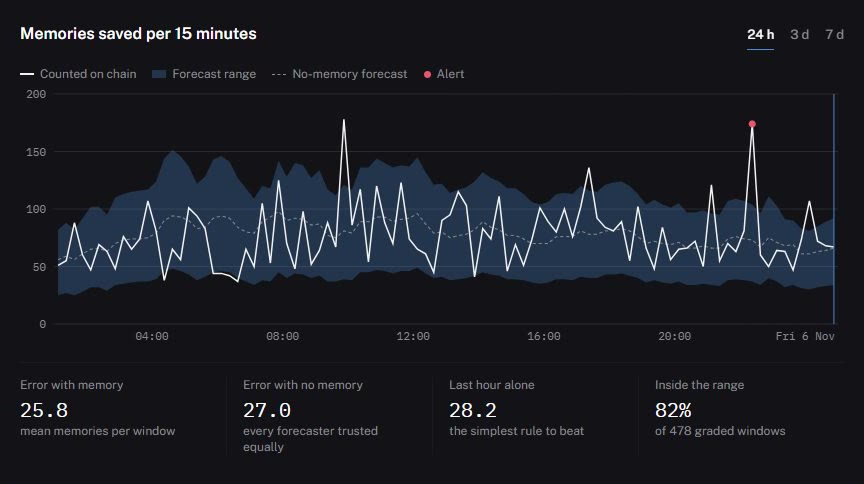
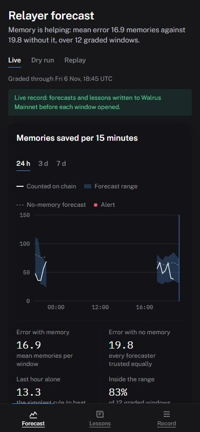
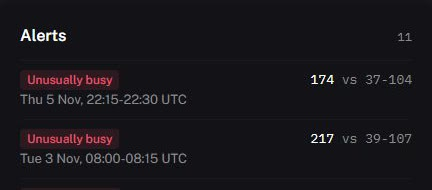
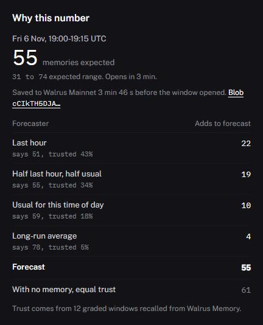
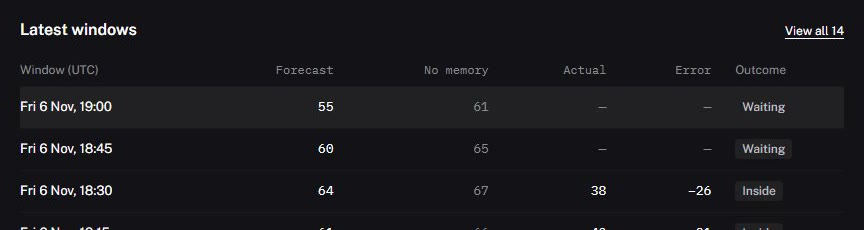
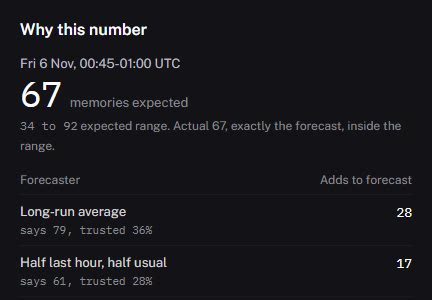
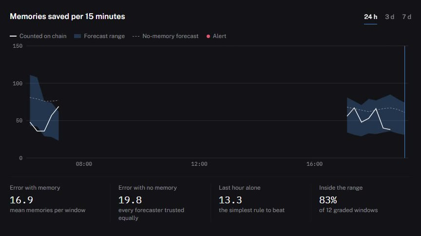

Live from Walrus







Understudy
It writes the forecast down before the chain decides.
Every 15 minutes an agent commits its forecast of the Walrus Memory relayer to Walrus Mainnet. Then the Sui chain, read through Tatum, grades it.
One window, start to finish
Fri 6 Nov, 18:15–18:30 UTC
61 expected
Range 34 to 81
Saved to Walrus 4 min 20 s before it opened
First it writes the number down.
Fri 6 Nov, 18:15–18:30 UTC
61 expected
Range 34 to 81
Saved to Walrus 4 min 20 s before it opened
Window open: the relayer works on Sui
Then the window opens on Sui.
Fri 6 Nov, 18:15–18:30 UTC
61 expected
Range 34 to 81
Window closed
Counted 40 through Tatum. Off by 21; no memory would have been off by 26
Then Tatum counts the chain.
Fri 6 Nov, 18:15–18:30 UTC
40 counted
Forecast 61, inside its range
Grade saved to Walrus. Next forecast trusts half last hour, half usual 38%, last hour 35%
Then the grade goes back to Walrus.
Why memory matters
25.8
memories off per window with memory, trusting each forecaster by its record
27.0
with no memory, every forecaster trusted equally
28.0
the best single forecaster on its own
Over 478 replayed windows of real Mainnet history: a modest gain, from a replay that tests the method. The live record keeps its own score on the dashboard.
Proof you can check
A blob per forecast
Every live forecast links to its blob on Walruscan.
The time is on record
The relayer records the write; the blob is certified on Sui.
Late means unscored
A forecast written after its window opened is left out of the score.
Rebuilt from Walrus
The live view is reassembled from recall, cached for five minutes.
Sealed, not hidden
Contents are encrypted with Seal; existence and certification are public.
Misses stay in
Every miss, gap and late window stays on the record.
Watch it work, live
A new forecast every 15 minutes, read straight from Walrus Mainnet, graded by the Sui chain.